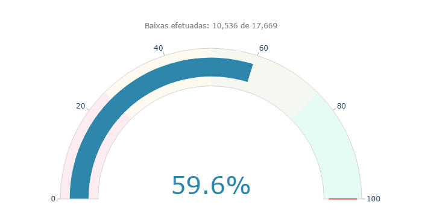
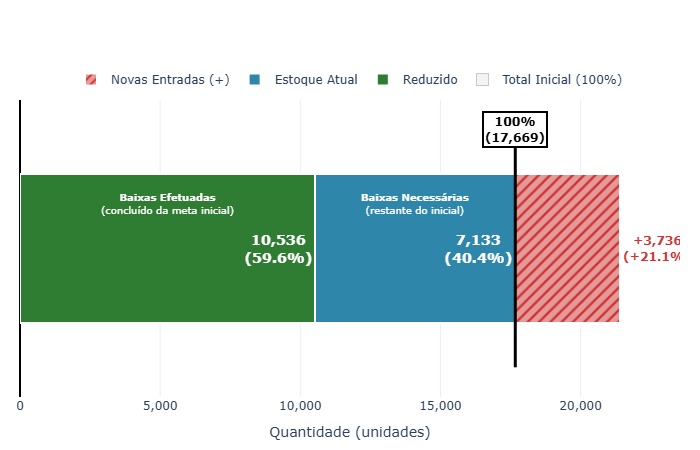
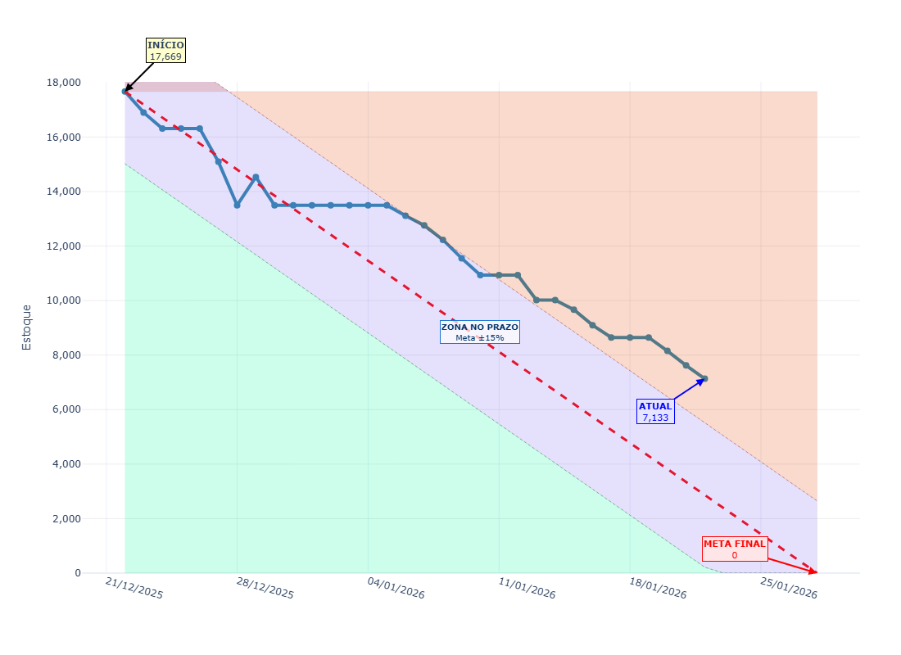
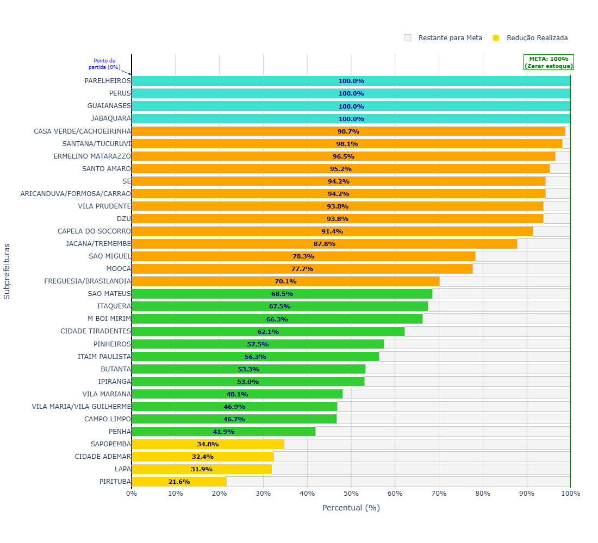

COPLAN/Dados
Secretaria Municipal das Subprefeituras
—
•
—
Voltar
Imprimir
Boletim Diário de Monitoramento
Painel de Gráficos — Poda e Remoção
Quatro visualizações-chave para leitura rápida e comparações.
Gráficos do estoque de referêcia
Clique em “Ampliar” para abrir em nova aba
1) Evolução do estoque
Velocimetro dos valores de referência
Ampliar

2) Barra de entradas
Estoque de referência vs entrada
Ampliar

3) Gráfico de born down
Aderência à trajetória de redução
Ampliar

4) Baixas por Subprefeitura
Produção/encerramentos no recorte
Ampliar
